1
下载OBS软件并安装好。
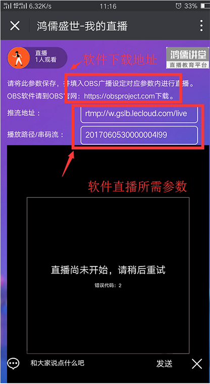 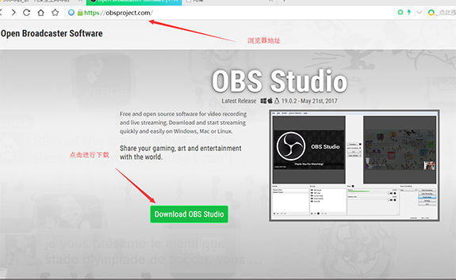 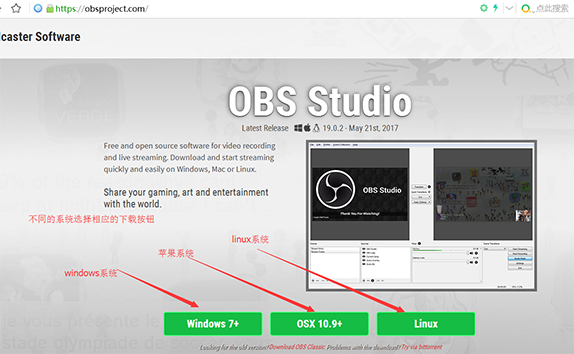 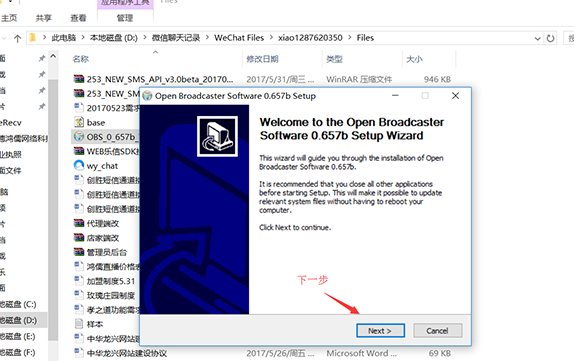 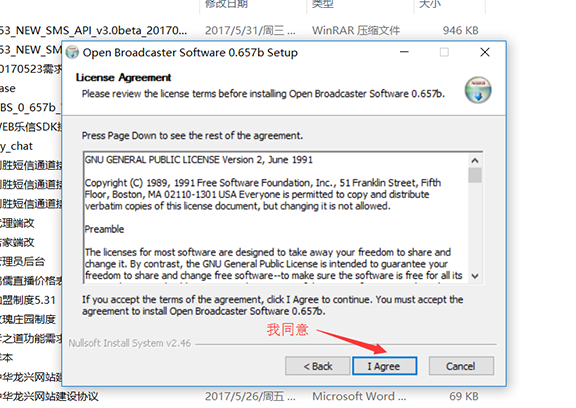2
设置参数：选“设定”
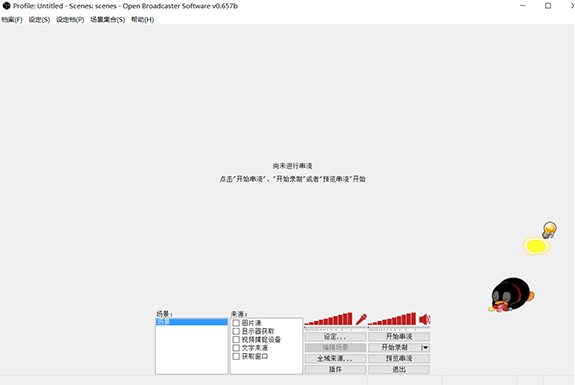 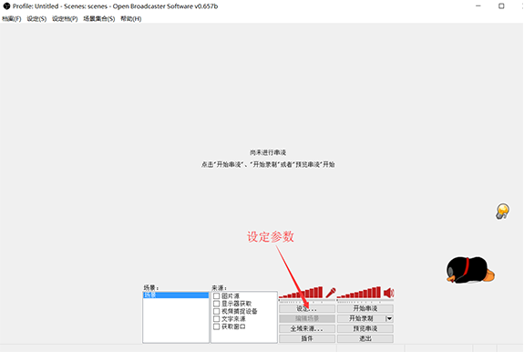3
广播设定：录制课程模式：选择只输出文件；做直播模式选择：直播流（去直播网站把FMS URL 和串流吗复制到这来。
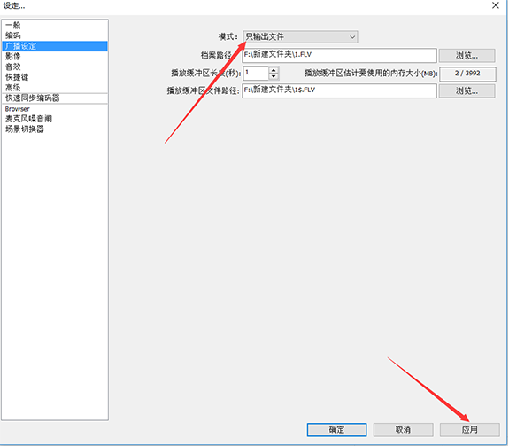 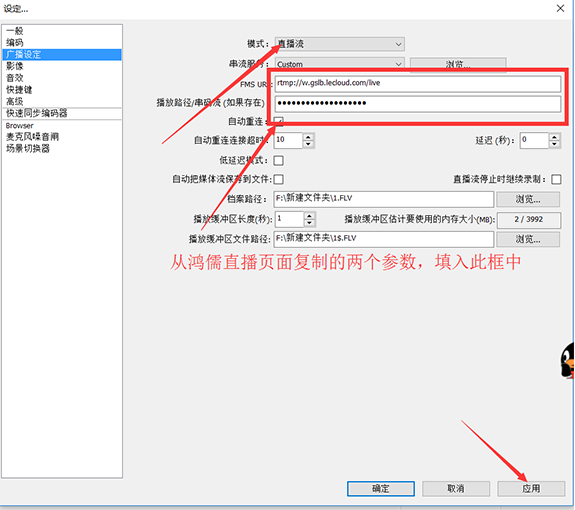 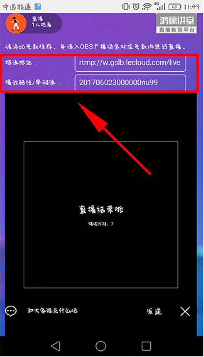4
编码——视频录制，如图所述设置好（这样设置的参数就能录制出1080原画课程)。视频直播，如图设置好。
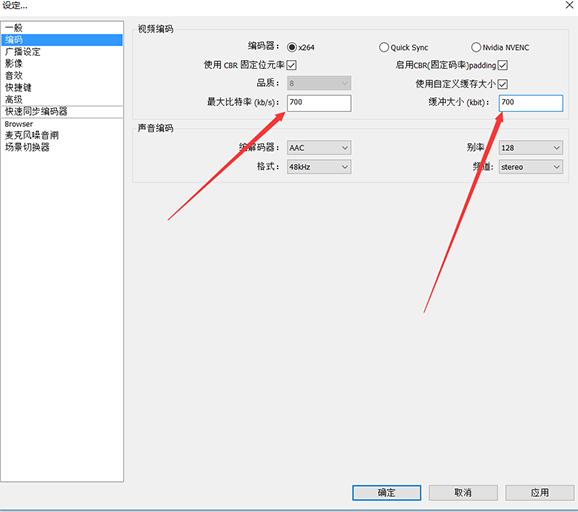5
影像——显卡选择，录制视频和直播设置基本一样。基本解析度代表电脑分辨率，是多少填多少。压缩分辨率代表：视频网站上传的视频分级比如、蓝光1080（1920*1080）、超清、高清、和分辨率有关。
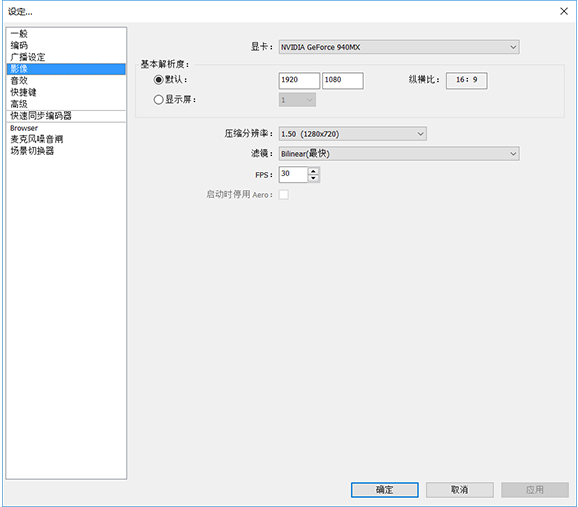6
音效选择（有外置声卡的请选择外置声卡，没有就选择默认。）其他参数就选择默认就可以了。
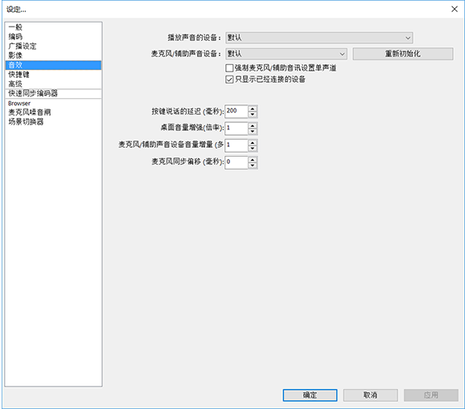7
参数选择完毕。1、右键添加场景。2、选择来源：右键添加显示器获取或游戏源（在显示器获取、图片、文字、游戏源、基础上选择position/size，可以更改屏幕大小、居中，水平）。

 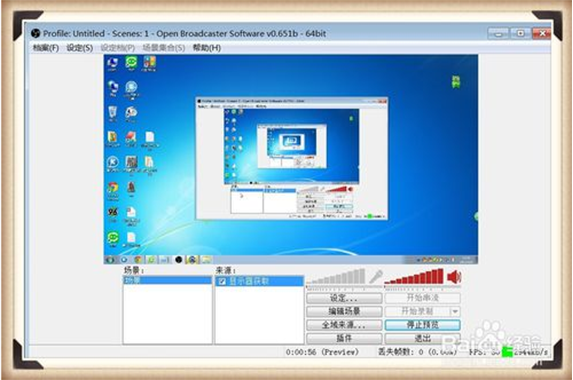
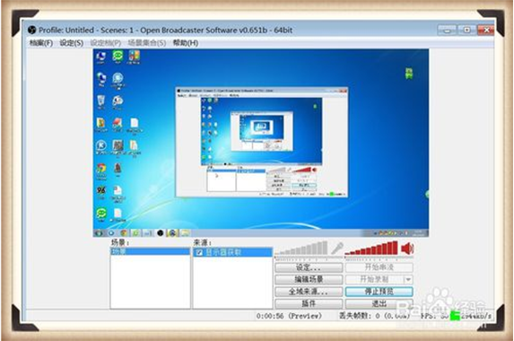
8
开始串流预览，预览没问题就开始录制或直播了。
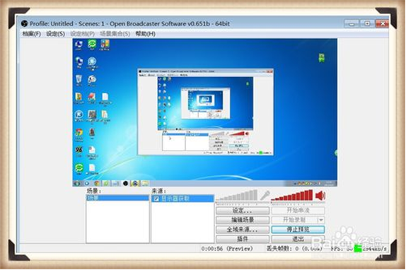